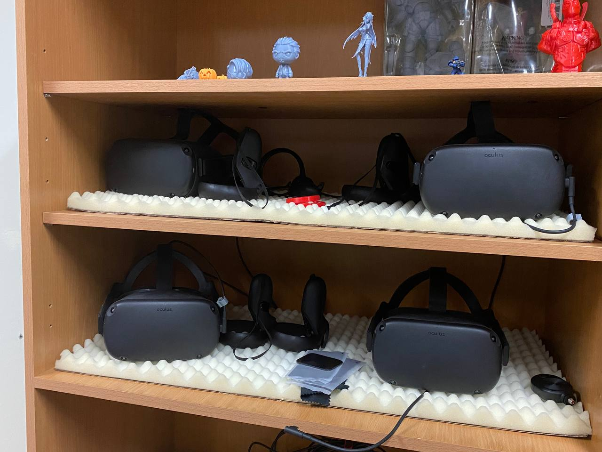
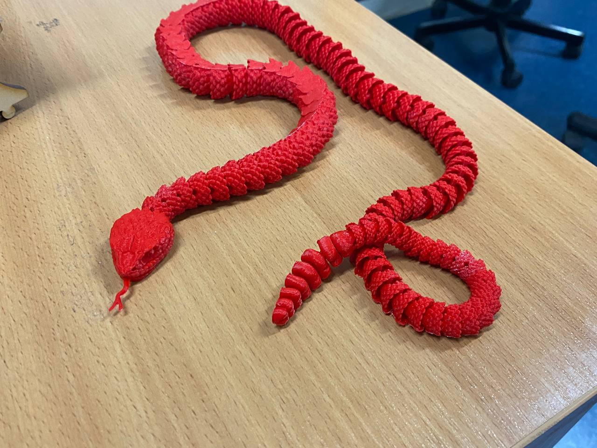
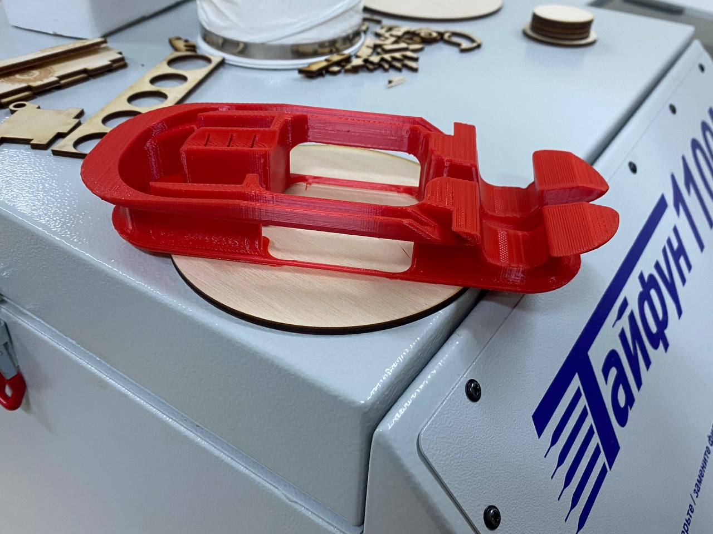

Проект Инжинирингового Центра ЮГУ
"Виртуальный 360 тур по Югорскому университету"



Описание проекта:
Выполнен в рамках внутреннего гранта ЮГУ. Представляет собой набор панорамных снимков с возможностью переходов между ними. Данный проект был создан для повышение уровня осведомлённости будущих абитуриентов и гостей с инфраструктурой университета. Создан на основе панорамных 360 снимков. Полученное изображение при помощи Java скрипта располагается на холсте, а изображения обрабатываются при помощи нейросети, уменьшается их объём с минимальной потерей качества.